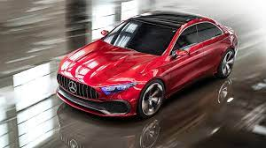

Mercedes-Benz sahifasi
BMW sahifasiga o'tish
AUDI sahifasiga o'tish

Avtomobil haqida qisqacha ma'lumot
Benz Etti yil o'tgach Daimler chempionatiga yo'l ochdi. Biroq, Karl to'xtamaydi: u to'rt g'ildirakli mashinani yaratadi, bu serialga aylanadi.
Daimler va Benz raqobatchi bo'lib qolmoqda, ammo ularning raqobat yaxshi deb nomlanishi mumkin. Damemler yanada barqaror12 bo'lib, shuning uchun muvaffaqiyatli5 bo'ldi, shuning uchun 1926 yilda Mercedes ushbu ishlab chiqaruvchining homiyligida allaqachon ishlab chiqarila boshlandi.
Birinchi to'liq Mercedes-35PS avtomobilida 5913 kubometr to'rt silindrli motor bor edi. U asosiy agregatlarning klassik joylashuvi va juda o'ziga xos chiroyli ko'rinishga ega bo'lishini ko'ring. Bir yil o'tgach, dunyo yanada rivojlangan dizaynni ko'rib, "Mercedes-Sime" deb nomlangan. Model diapazoni tez sur'atlar bilan kengaydi.
Mercedez-Benz moedallari
2.Mercedez-Benz E Class
3.Mercedez-Benz Sport Turbo
"Mercedez-Benz haqida qiziqarli faktni yuklab olish"